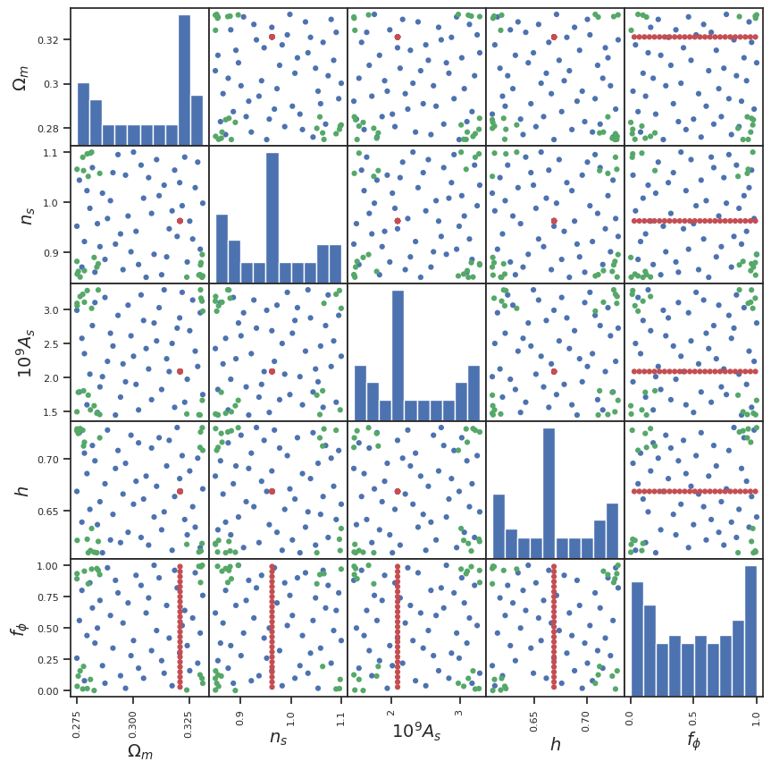
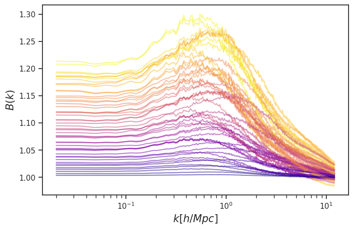
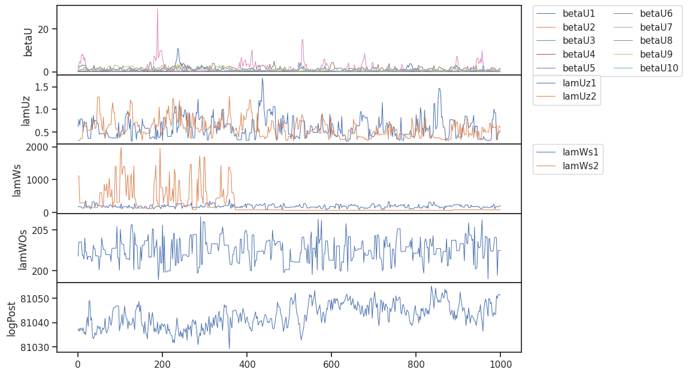
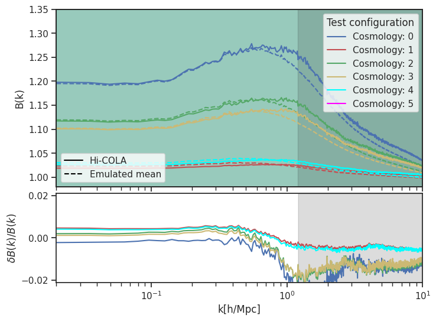
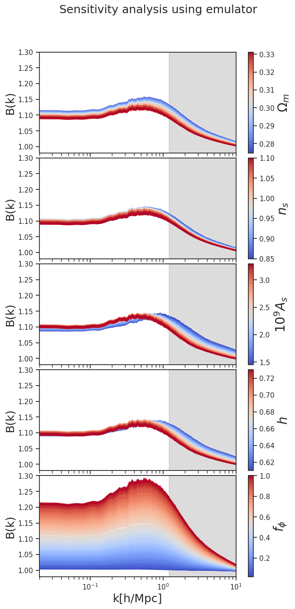
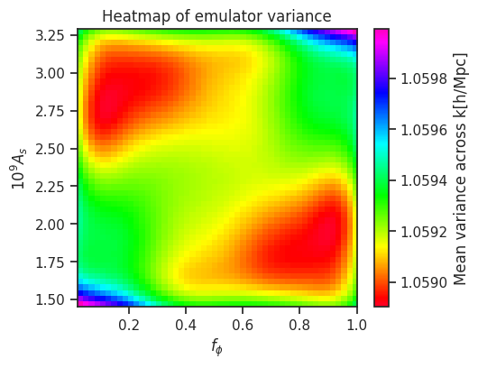
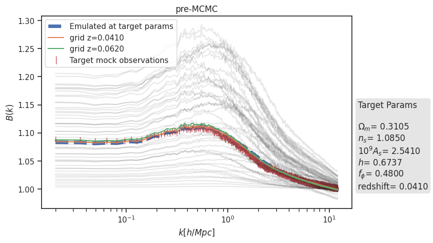
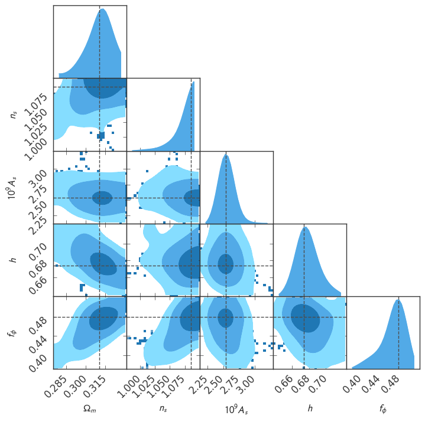
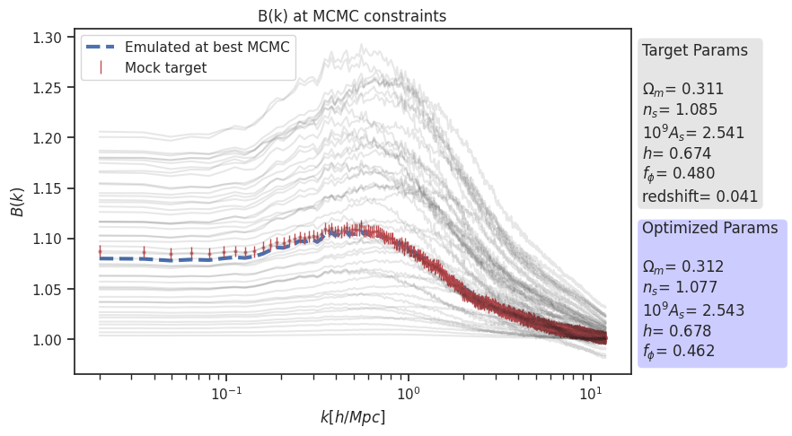

from CubicGalileonEmu.load import *
from CubicGalileonEmu.viz import *
from CubicGalileonEmu.pca import *
from CubicGalileonEmu.gp import *
from CubicGalileonEmu.emu import *
from CubicGalileonEmu.mcmc import *
import pandas as pd
import numpy as np
import matplotlib.pylab as plt
if_train_all = False ## Re-train all the models. Time-consuming.
if_mcmc_all = False ## Full MCMC run. Time-consuming.
if_savefig = FalseCubicGalileonEmu
GP emulator for boost factor in cubic Galileon gravity model
Modified Gravity emulator for boost in the dark matter power spectra
Install (for development, not production)
git clone https://github.com/nesar/CubicGalileonEmu.git
cd CubicGalileonEmu/
pip install -e '.[dev]'Basic rundown
A few imports
Loading files
Bk_all, k_all, z_all = load_boost_data()
p_all = load_params()A few plotting routines
Experimental design
df_train_a = pd.DataFrame(p_all, columns=PARAM_NAME)
colors = ['b']*p_all.shape[0]
# colors = ['b']*num_sims + ['r']*num_sims_test
plot_scatter_matrix(df_train_a, colors);
Boost metrics colored by cosmology parameters
color_by_index = 4
z_index = 0
plot_lines_with_param_color(p_all[:, color_by_index],
k_all,
Bk_all[:, z_index, :],
'Training data, z=' + str(z_all[z_index]),
r'$k [h/Mpc]$',
r'$B(k)$',
PARAM_NAME[color_by_index]);
Training involves: PCA, GP fitting.
## Data prep
z_index = 1
y_vals = Bk_all[:, z_index, :]
# y_ind = np.arange(0, y_vals.shape[1])
y_ind = k_all
# Train-test split
# test_indices = [0, 14, 35]
# input_params= p_all[test_indices]
# target_vals = Bk_all[:, z_index, :][test_indices]
# Load validation data
Bk_all_val, _, _ = load_boost_data(LIBRARY_BK_FILE_VAL, LIBRARY_ZK_FILE_VAL)
target_vals = Bk_all_val[:, z_index, :]
input_params = load_params(LIBRARY_PARAM_FILE_VAL)
train_indices = [i for i in np.arange(49)] # if i not in test_indices]
p_all_train = p_all[train_indices]
y_vals_train = Bk_all[:, z_index, :][train_indices]
print('Redshift: ' + str(z_all[z_index]))Redshift: 0.02sepia_data = sepia_data_format(p_all_train, y_vals_train, y_ind)
print(sepia_data)
model_filename = '../CubicGalileonEmu/model/multivariate_model_z_index' + str(z_index)
sepia_model = do_pca(sepia_data, exp_variance=0.95)
sepia_model = do_gp_train(sepia_model, model_filename)
plot_train_diagnostics(sepia_model)This SepiaData instance implies the following:
This is a simulator (eta)-only model, y dimension 768
m = 49 (number of simulated data)
p = 1 (number of inputs)
q = 5 (number of additional simulation inputs)
pu NOT SET (transformed response dimension); call method create_K_basis
Starting tune_step_sizes...
Default step sizes:
betaU
[[0.1 0.1]
[0.1 0.1]
[0.1 0.1]
[0.1 0.1]
[0.1 0.1]
[0.1 0.1]]
lamUz
[[5. 5.]]
lamWs
[[100. 100.]]
lamWOs
[[100.]]Step size tuning: 100%|██████████| 50/50 [00:07<00:00, 6.89it/s]Done with tune_step_size.
Selected step sizes:
betaU
[[0.361948 0.15817075]
[0.06792126 0.22467084]
[0.07658445 0.88922086]
[0.08401317 0.64568994]
[0.11279181 0.56452688]
[1.08732953 0.67830022]]
lamUz
[[1.36129735 1.24105281]]
lamWs
[[ 380.81081236 2410.87308185]]
lamWOs
[[16.8607107]]MCMC sampling: 100%|██████████| 1000/1000 [00:06<00:00, 145.58it/s]Model saved to ../CubicGalileonEmu/model/multivariate_model_z_index1.pkl
No thetas to plot
Load existing model
sepia_model = gp_load(sepia_model, model_filename)WARNING: make sure this model was instantiated with the same input data as the model corresonding to this saved model info.Single-redshift emulation for new cosmological parameters
test_indices_rand = np.random.randint(size=5, low=0, high=input_params.shape[0])
pred_mean, pred_quant = emulate(sepia_model, input_params[test_indices_rand])
# pred_quant == Emulated (0.05, 0.95) quantile
validation_plot(k_all, target_vals[test_indices_rand], pred_mean, pred_quant, xy_lims=[2e-2, 1e1, 0.98, 1.35]);
Sensitivity analysis from the emulator
f = sensitivity_plot(k_all, p_all, sepia_model, emulate, PARAM_NAME)
Multi-redshift emulation
Train all the models
if if_train_all:
do_gp_train_multiple(model_dir='../CubicGalileonEmu/model/',
p_train_all = p_all[train_indices],
y_vals_all = Bk_all[train_indices],
y_ind_all = k_all,
z_index_range=range(49))Load all trained models
sepia_model_list = load_model_multiple(model_dir='../CubicGalileonEmu/model/',
p_train_all=p_all[train_indices],
y_vals_all=Bk_all[train_indices],
y_ind_all=k_all,
z_index_range=range(49),
sepia_model_i=sepia_model)Emulator confidence across parameter range
# Parameter settings
steps = 40 # Number of steps in the grid for each parameter
param_name_extended = np.append(PARAM_NAME, 'Redshift')
red_min = 0
red_max = 3
red_mean = 1.0
param_min = np.append(p_all.min(axis=0), red_min)
param_max = np.append(p_all.max(axis=0), red_max)
param_mean = np.append(p_all.mean(axis=0), red_mean)
# Compute outputs and errors for a range of parameter values
def compute_errors(param_grid):
print(param_grid.shape)
errors = np.zeros(shape=(param_grid.shape[0], ))
# errors = np.array([np.mean(emu_redshift(params[np.newaxis, :], sepia_model_list, z_all)[1][:, 0, :]**2) for params in param_grid])
for par_indx in range(errors.shape[0]):
errors[par_indx] = np.mean(emu_redshift(param_grid[par_indx][np.newaxis, :], sepia_model_list, z_all)[1][:, 0, :]**2)
return errors.reshape(steps, steps)
# Example usage:
param_indices = [4, 5] # Indices of parameters to vary
fixed_indices = [i for i in range(len(param_name_extended)) if i not in param_indices]
fixed_params = {param_name_extended[i]: param_mean[i] for i in fixed_indices}
param_grid = generate_param_grid_with_fixed(param_name_extended, param_indices, fixed_params, param_min, param_max, steps)errors = compute_errors(param_grid)
errors.shape(40, 40)f = plot_error_heatmap(errors, [param_name_extended[i] for i in param_indices], [(param_min[param_indices[0]], param_max[param_indices[0]]), (param_min[param_indices[1]], param_max[param_indices[1]])])
if if_savefig:
f.savefig('../../../Plots/heatmap_params_4_5.png', bbox_inches='tight')
Parameter inference via MCMC using the emulator
Creating mock observational data
target_indx = 0 #0 ,14, 35
z_index = 2
L = 32
fake_obs_data_index_every = 1
redshift = z_all[z_index]
x = k_all[::fake_obs_data_index_every]
y = Bk_all[:, z_index, :][target_indx][::fake_obs_data_index_every]
y = y + 1e-4*np.random.normal(0.0, 1.0, size=y.shape)
yerr = np.sqrt( Bk_all[:, z_index, :][target_indx][::fake_obs_data_index_every]*(L**3))/(L**3)
x_grid = k_all
params_calib = p_all[target_indx][:, np.newaxis].T
print('redshift: ', redshift)f, a = plt.subplots(1,1, figsize = (8, 5))
input_params_and_redshift = np.append(params_calib, redshift)
bk_target, err_target = emu_redshift(input_params_and_redshift[np.newaxis, :], sepia_model_list, z_all)
a.plot(k_all, bk_target[:, 0], label='Emulated at target params', lw=5, ls='--')
a.errorbar(x, y, yerr, label='Target mock observations', ls='none', lw=1, color = "r")
a.scatter(x, y, s = 5, marker = "h", color = "r")
a.plot(k_all, Bk_all[:, z_index, :].T, 'k', alpha=0.1)
plt.plot(k_all, emulate(sepia_model_list[z_index], input_params_and_redshift[:-1])[0], label='grid z=%.4f'%z_all[z_index])
plt.plot(k_all, emulate(sepia_model_list[z_index+1], input_params_and_redshift[:-1])[0], label='grid z=%.4f'%z_all[z_index + 1])
string_print0 = 'Target Params \n\n'
string_print1 = PARAM_NAME[0] + '= %.4f'%input_params_and_redshift[0] + '\n'
string_print2 = PARAM_NAME[1] + '= %.4f'%input_params_and_redshift[1] + '\n'
string_print3 = PARAM_NAME[2] + '= %.4f'%input_params_and_redshift[2] + '\n'
string_print4 = PARAM_NAME[3] + '= %.4f'%input_params_and_redshift[3] + '\n'
string_print5 = PARAM_NAME[4] + '= %.4f'%input_params_and_redshift[4] + '\n'
string_print6 = 'redshift' + '= %.4f'%input_params_and_redshift[5]
string_print = string_print0 + string_print1 + string_print2 + string_print3 + string_print4 + string_print5 + string_print6
props = dict(boxstyle='round', facecolor='gray', alpha=0.2)
plt.text(1.02, 0.1, string_print, transform=a.transAxes, fontsize=12, bbox=props)
a.set_xscale('log')
plt.title('pre-MCMC')
a.set_xlabel(r'$k [h/Mpc]$')
a.set_ylabel(r'$B(k)$')
plt.legend()
pos0 = chain_init(params_list, ndim, nwalkers)
sampler = define_sampler(redshift, ndim, nwalkers, params_list, x_grid, sepia_model_list, z_all, x, y, yerr)MCMC run - first burn, then full.
pos, prob, state, samples, sampler, autocorr, index = do_mcmc(sampler, pos0, nrun_burn, ndim, if_burn=True)
if if_mcmc_all: # Full MCMC-run, will be slow
pos, prob, state, samples, sampler, autocorr, index = do_mcmc(sampler, pos, nrun, ndim, if_burn=False)
p_mcmc = mcmc_results(samples)
fig = plot_mcmc(samples, params_list, if_truth_know=True)
if if_savefig:
plt.savefig('../../../Plots/mcmc_plot.png', bbox_inches='tight')100%|██████████| 100/100 [03:13<00:00, 1.94s/it]
100%|██████████| 700/700 [25:08<00:00, 2.16s/it]
f, a = plt.subplots(1,1, figsize = (8, 5))
input_params_and_redshift = np.append(p_mcmc, redshift)
bk_mcmc, err_mcmc = emu_redshift(input_params_and_redshift[np.newaxis, :], sepia_model_list, z_all)
a.plot(k_all, bk_mcmc[:, 0], label='Emulated at best MCMC', lw=3, ls='--')
a.errorbar(x, y, yerr, label='Mock target', ls='none', lw=1, color = "r")
a.scatter(x, y, s = 5, marker = "h", color = "r", alpha=0.5)
a.plot(k_all, Bk_all[:, z_index, :].T, 'k', alpha=0.1)
# plt.plot(k_all, emulate(sepia_model_list[z_index], input_params_and_redshift[:-1])[0], label='Z1')
# plt.plot(k_all, emulate(sepia_model_list[z_index+1], input_params_and_redshift[:-1])[0], label='Z2')
string_print0 = 'Target Params \n\n'
string_print1 = PARAM_NAME[0] + '= %.3f'%params_calib[0][0] + '\n'
string_print2 = PARAM_NAME[1] + '= %.3f'%params_calib[0][1] + '\n'
string_print3 = PARAM_NAME[2] + '= %.3f'%params_calib[0][2] + '\n'
string_print4 = PARAM_NAME[3] + '= %.3f'%params_calib[0][3] + '\n'
string_print5 = PARAM_NAME[4] + '= %.3f'%params_calib[0][4] + '\n'
string_print6 = 'redshift' + '= %.3f'%redshift
string_print = string_print0 + string_print1 + string_print2 + string_print3 + string_print4 + string_print5 + string_print6
props = dict(boxstyle='round', facecolor='gray', alpha=0.2)
plt.text(1.02, 0.5, string_print, transform=a.transAxes, fontsize=12, bbox=props)
string_print0_mcmc = 'Optimized Params \n\n'
string_print1_mcmc = PARAM_NAME[0] + '= %.3f'%p_mcmc[0] + '\n'
string_print2_mcmc = PARAM_NAME[1] + '= %.3f'%p_mcmc[1] + '\n'
string_print3_mcmc = PARAM_NAME[2] + '= %.3f'%p_mcmc[2] + '\n'
string_print4_mcmc = PARAM_NAME[3] + '= %.3f'%p_mcmc[3] + '\n'
string_print5_mcmc = PARAM_NAME[4] + '= %.3f'%p_mcmc[4]
string_print_mcmc = string_print0_mcmc + string_print1_mcmc + string_print2_mcmc + string_print3_mcmc + string_print4_mcmc + string_print5_mcmc
props = dict(boxstyle='round', facecolor='blue', alpha=0.2)
plt.text(1.02, 0.05, string_print_mcmc, transform=a.transAxes, fontsize=12, bbox=props)
a.set_xscale('log')
plt.title('B(k) at MCMC constraints')
a.set_xlabel(r'$k [h/Mpc]$')
a.set_ylabel(r'$B(k)$')
plt.legend()
if if_savefig:
plt.savefig('../../../Plots/mcmc_results_Bk.png', bbox_inches='tight')
### TO-DO
## Redshift sampling is better in the new Validation design -- validate AFTER redshift interpolation